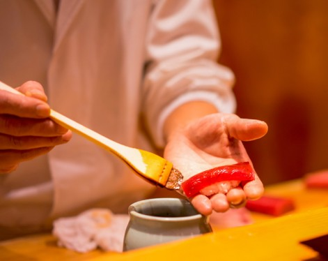

CÂU CHUYỆN
thương hiệu hatoyama
Mỗi khát vọng cháy bỏng đều là khởi nguồn của một câu chuyện thú vị. Nhà hàng nhật bản – Nhà hàng hải sản Nhật Hatoyama (Japanese Fresh Seafood Restaurant) bắt đầu câu chuyện của mình bằng khát vọng tột bậc đưa tinh hoa ẩm thực Nhật tới thực khách Việt. Khát vọng đó được nhen nhóm từ niềm đam mê bất tận, cùng quyết tâm hiện thực hóa ước mơ lớn trong cuộc đời của bếp trưởng tài hoa Kyo. Hơn 20 năm kinh nghiệm với khoảng thời gian dài tầm sư học đạo và khám phá các món ăn đặc trưng nhất tại xứ sở hoa Anh đào, Chef Kyo miệt mài kiếm tìm sự hoàn hảo với sứ mệnh là một trong những cầu nối tinh hoa giữa ẩm thực Nhật và thực khách Việt.
Xem thêm
Sự kết hợp tuyệt vời giữa ẩm thực truyền thống và đương đại Nhật qua những món ăn
dưới đôi bàn tay tài hoa của bếp trưởng KYO Nguyễn
dưới đôi bàn tay tài hoa của bếp trưởng KYO Nguyễn
Hatoyama đưa tinh hoa ẩm thực Nhật tới thực khách
| Menu cá tươi 24h “bay” từ biển Nhật về Việt Nam | Menu hải sản đang bơi từ Thế giới hải sản | Bếp trưởng từng phục vụ nguyên Thủ tướng Nhật Bản | Không gian mang đậm văn hóa Nhật |
--------------